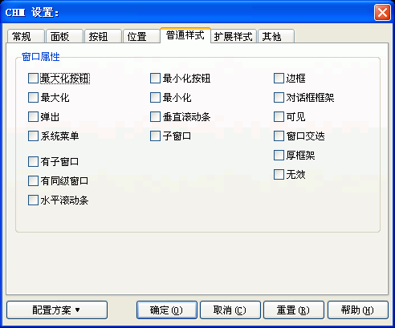

您可以通过在编译设置对话框里按"CHM设置..."按钮, 然后在"CHM设置"对话框里选取"普通样式"跳格看到这个对话框。关于这个对话框的使用请看下面的具体描述.

如果您不是程序员或不需要为程序制作具有特殊属性的帮助文件，可以忽略这里的全部选项。
这里的属性与WIN32系统API的 SetWindowLong 和 CreateWindow 里定义的窗口属性相同，如果您确实需要为CHM的窗口定义一些特殊的窗口属性，请直接参考相应的API函数说明，下面只是简单解释一下，具体请参看相关的API说明。
窗口属性 / 最大化按钮:
在CHM窗口的标题栏有最大化按钮（与DWORD：WS_MAXIMIZEBOX的值相同）
窗口属性 / 最小化按钮:
在CHM窗口的标题栏有最小化按钮（与DWORD：WS_MINIMIZEBOX的值相同）
窗口属性 / 边框:
CHM窗口有细边框（与DWORD：WS_BORDER的值相同）
窗口属性 / 最大化:
CHM窗口初始为最大化（与DWORD：WS_MAXIMIZE的值相同）
窗口属性 / 最小化:
CHM窗口初始为最小化（与DWORD：WS_MINIMIZE的值相同）
窗口属性 / 对话框框架:
CHM窗口初始为没有标题栏的对话框样式，窗口不能被放大缩小（与DWORD：WS_DLGFRAME的值相同）
窗口属性 / 弹出:
CHM窗口初始为弹出窗口 - 子窗口不能被同时选中（与DWORD：WS_POPUP的值相同）
窗口属性 / 垂直滚动条:
CHM窗口初始为有垂直滚动条（与DWORD：WS_VSCROLL的值相同）
窗口属性 / 可见:
CHM窗口初始为可见（与DWORD：WS_VISIBLE的值相同）
窗口属性 / 系统菜单:
CHM窗口的标题栏有系统菜单（与DWORD：WS_SYSMENU的值相同）
窗口属性 / 子窗口:
CHM窗口初始为子窗口 - 弹出不能被选中（与DWORD：WS_CHILDWINDOW的值相同）
窗口属性 / 窗口交迭:
CHM窗口既有标题栏也有边框（与DWORD：WS_OVERLAPPED的值相同）
窗口属性 / 有子窗口:
CHM窗口可以有子窗口（与DWORD：WS_CLIPCHILDREN的值相同）
窗口属性 / 厚框架:
CHM窗口初始为可以被放大缩小（与DWORD：WS_THICKFRAME的值相同）
窗口属性 / 有同级窗口:
CHM窗口可以有同级窗口（与DWORD：WS_CLIPSIBLINGS的值相同）
窗口属性 / 无效:
CHM窗口初始为不响应用户的任何操作（与DWORD：WS_DISABLED的值相同）
窗口属性 / 水平滚动条:
CHM窗口初始为有水平滚动条（与DWORD：WS_HSCROLL的值相同）
| 版权所有 © 2000-2007 国华软件 保留全部权利. |